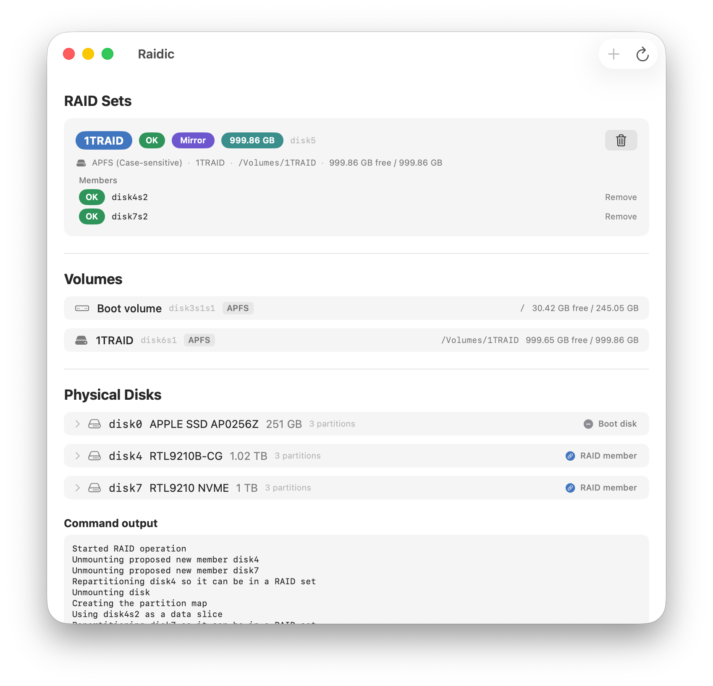

AppleRAID 管理，
不用打開終端機。
macOS 13 或更新版本 · Apple 晶片與 Intel · 已通過 Apple 公證
目前所有功能免費開放，不需試用、訂閱、帳號或授權碼。
SHA-256：5e37aed5d9df6189995789e218c418de7db90def99c5ccb6f82012a3a69839b4
下載 checksum 檔

RAID 集降級時整張卡片變成橙色。單碟運行的鏡像會標示
無冗餘 — 即使 macOS 回報它是「Online」。缺失的成員
會被明確點名。
diskutil 只顯示整數百分比。Raidic 直接讀取已重建的位元組數，
重建剛開始就能顯示 0.12%，過程中顯示
748 GB / 2 TB — 每 5 秒自動更新。
把實體磁碟拖到 RAID 集上即可加入成員。確認一次後開始重建 — 絕不無聲執行。
先用一顆磁碟建立鏡像、搬入資料，之後再加入第二顆。經典的 遷移工作流程，內建支援。
開機磁碟永遠不會出現在候選清單。建立與刪除 RAID 集必須輸入 名稱確認；加入或修復磁碟則會顯示明確的清除確認。容量不足的磁碟在 你輸入密碼之前就會被擋下。
所有掛載卷宗的檔案系統、掛載點、可用空間一覽無遺 — 包括 RAID 集上 APFS 容器裡的卷宗。
點擊任何磁碟即可查看型號、匯流排、SMART 狀態與分割區。 「Samsung PSSD T7」這類品牌型號直接顯示在清單上。
RAID 集名稱、類型、容量都是彩色標籤。點一下就換顏色 — 文字自動切換黑白，永遠清晰可讀。
English、繁體中文、日本語 — 隨時用 ⌘, 在設定中切換。
SwiftUI、Apple Silicon 原生、零相依。讀取免密碼，只有真正 變更磁碟時才要求管理員授權。
Raidic 驅動的是 Apple 內建的 diskutil 引擎。列表與監控是唯讀的，不需要密碼。每個破壞性操作都會明確顯示將被清除或移除的項目，並要求 macOS 管理員認證。建立與刪除 RAID 集還必須輸入名稱；加入或修復磁碟則使用明確的清除確認。
可以。選擇鏡像並只勾選一顆磁碟 — Raidic 會警告這個 RAID 集起始時沒有冗餘，之後把第二顆磁碟拖進來即可完成鏡像，並觸發帶有即時進度的完整重建。
單一成員的鏡像，macOS 會回報 Online，因為唯一的成員是健康的。但一顆磁碟意味著零容錯 — Raidic 明確標示這個狀態，讓你不會被突襲。
支援。當 RAID 集上是 APFS 容器時，Raidic 會沿著容器找到真正掛載的卷宗，顯示名稱、掛載點與可用空間 — 這正是磁碟工具程式最難看清楚的部分。
Raidic 永遠不會提供開機磁碟或已屬於其他 RAID 集的磁碟。帶有已刪除 RAID 殘留的磁碟會被標示 — 它們仍然可用，建立新 RAID 集時會順便清理。
不會。沒有網路功能、沒有分析追蹤，只跟 macOS 自己的磁碟管理溝通。
不行 — 這是 macOS 的限制，不是 Raidic 的。AppleRAID 適用於資料碟與外接碟，例如一對鏡像備份碟。